1 path
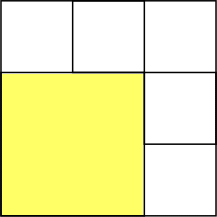
4 paths
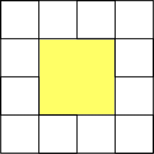
8 paths
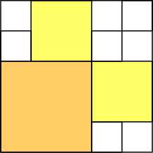
8 paths
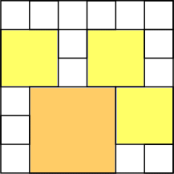
14 paths

24 paths
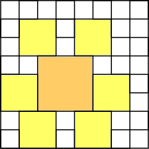
30 paths
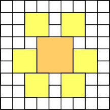
36 paths
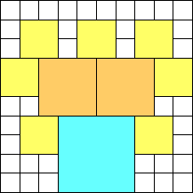
40 paths (JD)
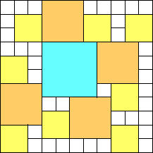
50 paths (GS)
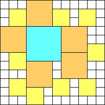
67 paths (GS)
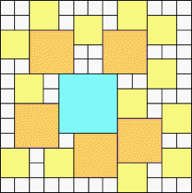
81 paths (MM)
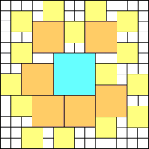
97 paths (MM)
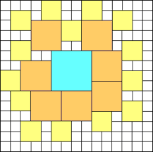
108 paths (MM)
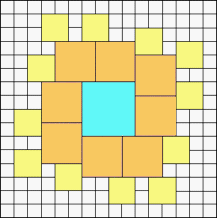
116 paths (MM)
| n=1 1 path | n=3 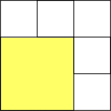 4 paths | n=4 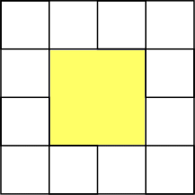 8 paths | n=5 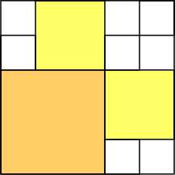 8 paths |
| n=6 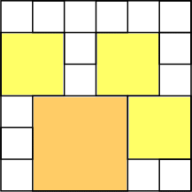 14 paths | n=7 24 paths | n=8 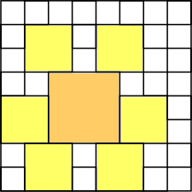 30 paths | n=9 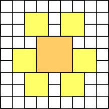 36 paths |
| n=10 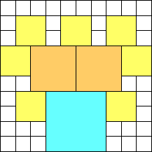 40 paths (JD) | n=11 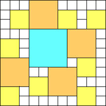 50 paths (GS) | n=12 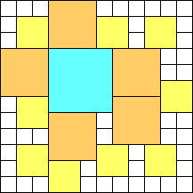 67 paths (GS) | n=13 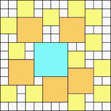 81 paths (MM) |
| n=14 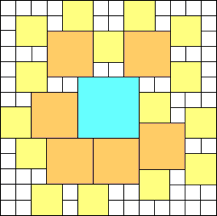 97 paths (MM) | n=15 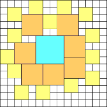 108 paths (MM) | n=16 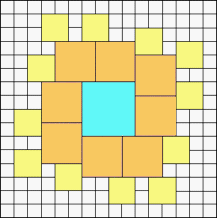 116 paths (MM) |
| n=1 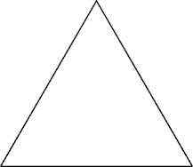 1 path | n=3 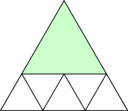 2 paths (GS) | n=4 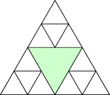 6 paths (GS) | n=5 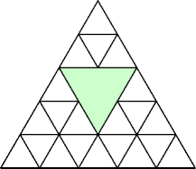 6 paths (GS) |
| n=6 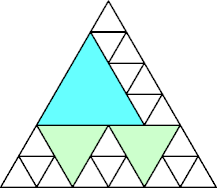 9 paths (GS) | n=7 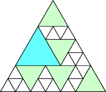 13 paths (GS) | n=8 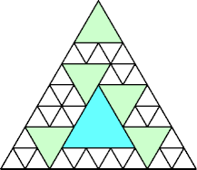 19 paths (GS) | n=9 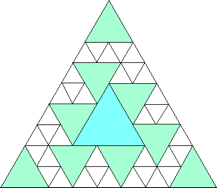 27 paths (MM) |
If you can extend any of these results, please e-mail me. Click here to go back to Math Magic. Last updated 3/22/17.